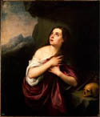

From
the collection

Bartolomé
Esteban Murillo
The Penitent Magdalen
About 1660
Oil on canvas
H.48-1/2 x W.42-1/2
The Bergmann RIchards Memorial Fund
The Institute's painting portrays Mary Magdalene, the harlot who became a follower of Christ. She stands alone in a cave, her hair unbound to signify her penitence. The human skull on the ledge near her is a memento mori, a reminder of life's brevity and of human failings. Pervading this scene and most of Murillo's other images is a tenderness that later generations regarded as sentimental, but which today is once again appreciated as genuine religious feeling.